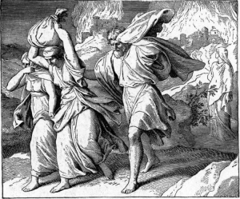

< < < Back
How Philosophy Can Revive Your Dormant Critical Thinking Skills – Return Of Kings
I suppose it is no surprise that, in our era, plagued by low standards and over a century of Modernist programming, many persons think it is a mark of intelligence or tough-mindedness to be radically skeptical of any certain truths apart from the “empirical” sciences. Religion is but a “blue-pill” form of thought control, presuming to teach us peasants how to think. Certainly I felt this way during my atheist days. But the disappearance of the gift of Faith is consequent to the loss of real knowledge, the disappearance of the queen of the sciences, and the multiplication of impiety and folly.
Some people don’t want to be told “how to think.” In my experience, what they usually mean, is they don’t want to be told what to think; but the art of thinking clearly—i.e., knowing how to think—is in short supply in our day. I often marvel that the men who have come to realize that the media, schools and culture have lied to them about feminism, do not suspect they’ve also lied about everything else, and suppressed the first elements of thought. Indeed, the necessary prerequisite for implementing feminism and other leftist ideas, was to shatter the unity of Christendom and undermine her culture, which had become the treasury of the whole, Western canon.
For us, who have been raised and educated under the domination of the leftist establishment, much of what we think we know is false, on many topics. And even when we are dealing with accurate information, we are discouraged from learning, training and certainly from mastering, any penetrating power of thoughtful analysis.
To the extent that thinking is praised, “critical thinking” is usually praised; most people understand that term, in a way that foments a culture of radical skepticism. Only thought that knows how to doubt, is viewed as rigorous or tough-minded. I would need to look into the matter more, but I suspect this is closely related to the dominance of “critical theory” and deconstructive thought. Indeed, this is what Western Civilization is now—a mass of loathed, deconstructed, disemboweled matter for all to piss upon.

I would characterize rigorous thought as alternatingly analytical and synthetic, rather than critical. “Critical” can simply mean “of such a nature as to make judgments,” and by that definition I think the term is acceptable. But I think most people associate the term with a more winnowing approach. A keen mind should be discerning and discriminatory, making distinctions and breaking things down into their parts; likewise, a powerful mind is synthetic, capable of understanding the relationships between things, and using that knowledge to generate something positively. I hate to use the term “originality,” because we are dealing with the universe as it has been given to us, and “there is nothing new under the sun.” But what most people would call a “creative” or “original” mind, I would describe as a mind with such a keen power of synthesis, that it is highly fecund and procreative, highly capable of producing insights that seem novel to us, feeble men.
I will eventually get around to an analysis of the ideological ruination of Western Civilization over the past half a millennium. But I think a grounding in the art of thought, as the Western tradition developed it, will be the best first step. Besides, it will make the other topic more rewarding. I am now tackling the Manual of Modern Scholastic Philosophy, written by Cardinal Mercier (some of you may remember that I recommended his treatise on Christian Mortification in the past); I look forward to reading this erudite tome by a man who clearly had his bona fides in intellect, ascesis and sanctity. As I work through it, I thought it would be good to simplify it, and use it as a guided tour through European philosophy.
What, exactly, is philosophy?
Philosophy is a science, in the pure sense of the term—i.e., a field of knowledge. Probably many of you already object to this idea; indeed, as we go on, we will see how powerful an influence is exerted by the mere words we commonly use to refer to things. But in any case, “science” is from Latin scientia, which simply means “knowledge.” Cardinal Mercier observes a trend in his day, which is now quite pervasive. The explosion of the positive sciences and the increasing accuracy of man’s investigative instruments, led to an increasing conviction that only such things as the positive sciences could examine and verify, empirically, were confidently known to be true, and merited the title of “science.”
Philosophy thus came to be viewed as a shadowy field of speculation and possibly mysticism, a smorgasboard of mere opinion. Yet if one considers, for a moment, that mathematical reasonings can be perceived as true by the mind, without needing to translate those reasonings into real-world operations, one can begin to perceive that the mind may know rational and philosophical truths as certainly as other sciences (or perhaps more certainly).
Well, then, what kind of science is it? The Cardinal explains:
Philosophy does not profess to be a particularized science, with a place alongside other such sciences, and with a restricted domain of its own for investigation; it comes after the particular sciences and ranks above them, dealing in an ultimate fashion with their respective objects, inquiring into their connections and the relations thereof, until finally it arrives at notions so simple that they defy analysis, and so general that there is no limit to their application. So understood, philosophy will exist as long as there are men endowed with the ability and energy to push the inquiry of reason to its furthest limit. So understood, it is a living fact, and has an history of more than two thousand years.
The Cardinal points out that those who doubt philosophy’s power to penetrate to such truths, who pride themselves on being “positivists” (on the pretense that they deal only with positive facts), or “agnostics” (boasting that they do not concern themselves with what lies beyond immediate facts), still have their own general theories about things, and must take certain things for granted—i.e., on faith—which are requisite for their confidence in what knowledge they have.

He continues, by pointing out the distinguishing feature of thought (i.e., the simplicity and universality of ideas), which also gives us the general notion of philosophy. What is this?
The human mind does not take the sum total of reality in at a glance (or, at a thought). We think discursively, when we think in our limited, human fashion. He uses the example of a copper-sulphate crystal. The man perceiving it does not know all about it at once; he perceives a degree of its unity by analogy, of course, but he also perceives its separate characteristics (it is blue, it is crystalline, it is hard, etc.), and would need to keep investigating and making many more distinctions, indeed, if he wanted to really understand all he could about it (of what atoms are its molecules made? why does it form in this manner? what is its origin? for what can it be used? etc.).
The separate consideration of a thing’s notes, is an abstractive thought process (from Latin abstrahere, “pull away”); the consideration of all these notes coinciding in one, integral object of the mind, is a unitive thought process. The extent of the notes an object of the mind has, is called the comprehension of an idea (from Latin comprehendere, “pull together), whereas the range of application an idea has (i.e., the greater or lesser number of things it can apply to) is called its extension (from Latin extendo, “stretch out”).
One can see that the comprehension and extension of an idea are inversely related; a simpler idea has a more general application, a complex idea is more specific. “Blue” is a very simple; it has a single note, a very small comprehension, and therefore its extension is very broad—“blue” can extend and apply to many things. But, “a thing extended in three dimensions of space, prism in shape, bluish in color, taken from the copper mine nearby, currently in my hand” is an idea with many more elements in its comprehension, and therefore its extension is rather specific, applying only to the copper-sulfate in my hand.
Since the simplicity and universality of ideas go hand-in-hand like this, one can see how, in order to explain anything, man’s mind must first consider a thing abstractly in its simplest components, breaking it down to the maximum extent possible, with a view to putting it all back together, thus explaining it as an whole by means of its simplest elements. The irreducibly simple, elementary objects of thought, by which other things are understood, are called principles (and, in some contexts, reasons). The Cardinal states:
Principles, or fundamental reasons, are the ultimate solutions to the problems the human mind inevitably proposes every time it sets itself to reflect upon the world or upon itself. They supply the answers to the last why and wherefore that reason asks.
Continuing to paraphrase his thought, we can thus say that philosophy is the most general science; its field of study, involves the simplest principles of broadest extension, whereby all other objects of thought are explained. Of these principles and causes, Aristotle said: διὰ γὰρ ταῦτα καὶ ἐκ τούτων τἆλλα γνωρίζεται ἀλλ᾽ οὐ ταῦτα διὰ τῶν ὑποκειμένων (“for through and by these things, other things are known; but these things are certainly not known by their mere appearances”).
And with that, we make a beginning of philosophy.
Read More: Self Improvement Is Not Just For Young Guys